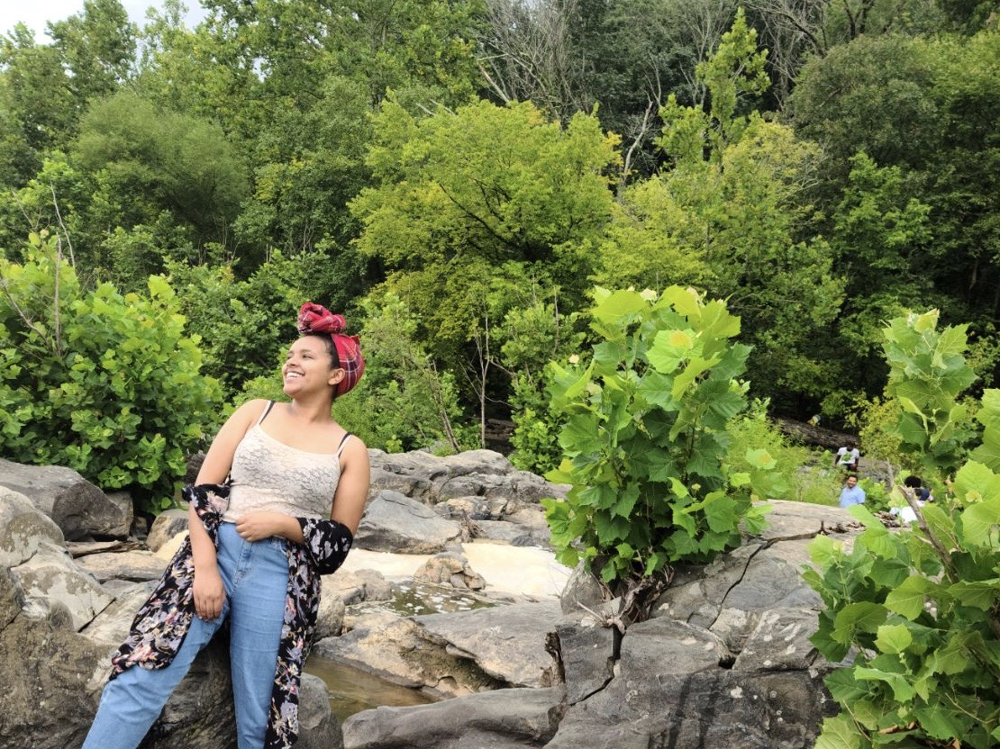

About Me
Hi, my name is Meklit Cherie, I'm currently a junior studying Software Engineering at Make School.
My main focus in this study is computer science, to be more specific it is Data Science, as a beginner of a computer science student I would say I actually like the classes and tend to further my knoweldge on it, and fell interested in the aritificial intelligence and want to work more on it.
My ultimate goal is to be successfull in this field and make myelf and country proud, coming from a third world country everything seems immpossible until you make it, so being able to set this example for my fellow people will be a dream come true.